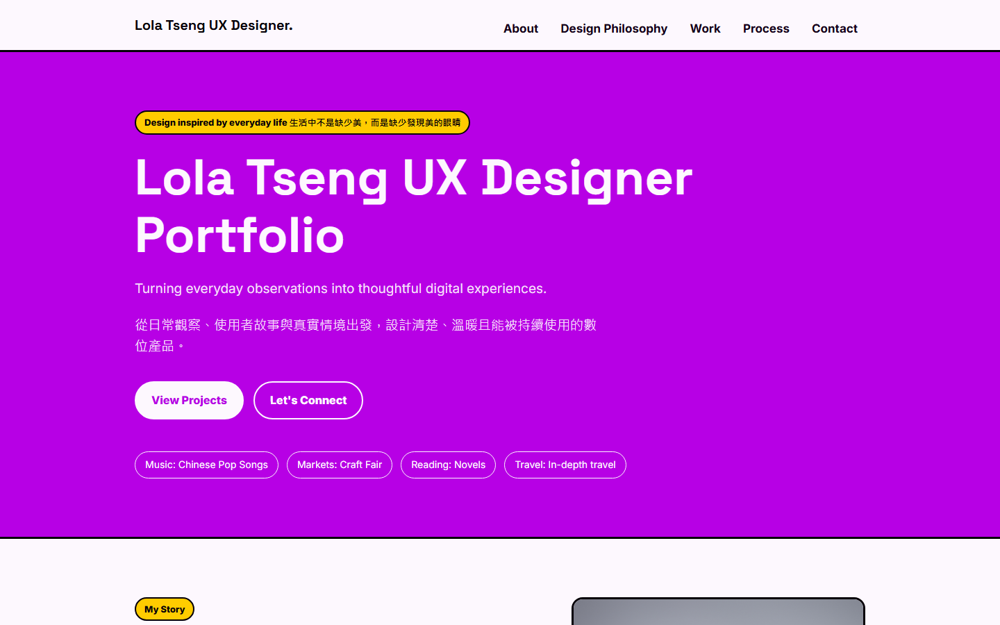
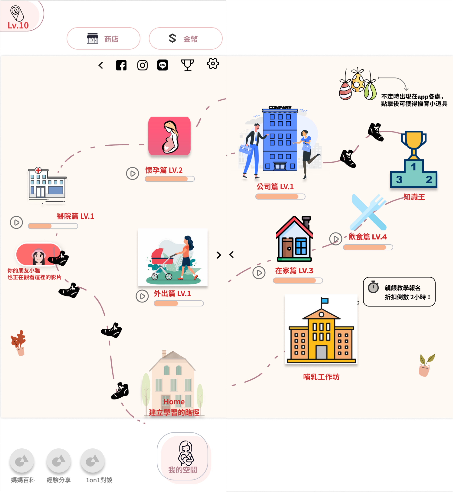

Portfolio System
Content-managed in Markdown and turned into a live site by a custom build script, keeping updates simple and visually consistent.
Defining problems through user research, then shipping them into real products with AI collaboration.
Rooted in everyday observations, real user stories, and honest context — designing digital products that are clear, warm, and built to be actually used, not just handed off as a design file.
5 UX Case Studies・InnoConnect+ Gold Award・3 AI-Collaborated Products Shipped

Built a usability test into my junior high IT lessons, found where students got stuck across 18 classes, and shipped the redesign myself.

Built an AI-assisted insurance interface with an industry mentor, using a decision tree to help agents match clients to the right product faster.

Shipped a healthcare platform prototype and validated its navigation structure through usability testing with 3 users, improving search task success.

Designed a gamified breastfeeding-education app using the Octalysis framework to keep users engaged — won the InnoConnect+ Gold Award.

Redesigned an e-commerce comparison feature, lifting task completion to 97% and significantly improving information clarity.
I define problems through user research, then use AI collaboration to turn the design into a product that actually ships — that's how I'd position myself right now.
When making decisions, I like to think through several directions on my own first, then talk it through with others, converging on an answer from where those views overlap; once I truly believe in something, I won't settle for a lukewarm compromise — I'd rather take the time to make the case until the consensus lands where I originally thought it should.
Friends tease me for "having a lot of stuff," but there's always a system behind how it's arranged — that instinct to want to collect everything, but keep it organized, is probably also why I fell into information architecture in the first place.
In design, I believe understanding the real need matters more than rushing to a solution; prototypes should be fast, technology should stay mostly invisible, and good experiences are usually hiding in small everyday details.
Built three real, shipped products from zero to one — this portfolio site, Petal Log, and the course website I use in class every day — covering the full loop from clarifying requirements to interface design to frontend implementation.
In 2026 I completed the AI for Generalists and Digital Marketing tracks of Google's Digital Talent Exploration Program and earned the Gemini Certified Educator certification. I'm now preparing for the AI-901 exam, turning one-off Vibe Coding experience into a method that's repeatable and extensible.
I treat AI as a discussion partner: think through the problem framing first, then let AI generate content; if the result doesn't match what I expected, I change the angle of my prompt and iterate, rather than scrapping it and starting over. That's also why I pay close attention to the misunderstandings and off-target answers AI commonly gives — that's actually a human-AI interaction problem worth designing a solution for. Rephrasing the question from a different angle usually finds the answer, rather than it just being a case of "the AI isn't smart enough."